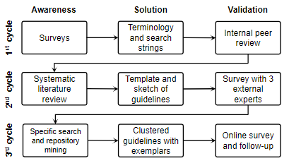
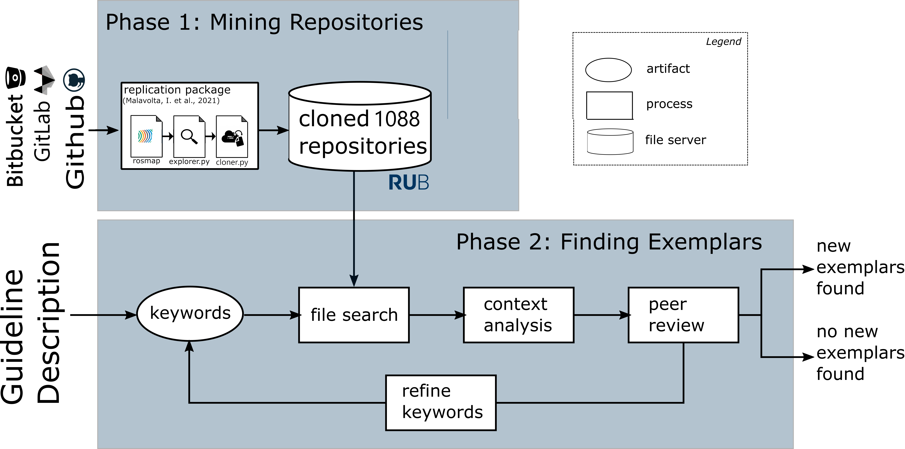

Would you like to replicate our study? This page will take you through the steps to replicate our study. We use the methodology to guide you through the replication process. We understand that some steps are hard or even impossible to replicate, thus we provide artifacts (protocols, scripts, spreadsheets with results) generated during our study to help you follow along. Please, contact us in case you have any doubts.
Before you start, click here to download the replication package as a .zip
We followed design science to synthesize the guidelines. We guide you through each cycle of the design science process from Fig 1.
Figure 1: Activities to synthesizing guidelines according to design science
The first cycle is devoted to establishing awareness of the state-of-the-art and building the terminology used in the study.
We elicit important surveys in runtime verification and field-based testing:
From the surveys, we extracted the following terminology. We present it in the format of a search string since the terminology intended to be used in a systematic literature review (in Cycle 2):
Search String = ( ros OR ”robotic operating system” ) AND ( ”runtime verification” OR ”runtime assurance” OR ”online assurance” OR ”online verification” OR ”runtime monitoring” OR ”runtime testing” OR ”online testing” OR ”on-line testing” OR ”field-based testing” OR ”field testing” OR ”in-vivo testing”
The terminology was validated internally, through peer reviews and discussions with co-authors to consolidate the scope of our study.
The Second Cycle focused on performing a literature review, synthesizing the guideline templates, and performing an external validation of the template.
Figure 2: Activities to conducting the systematic literature review
We present precise descriptions for each activity in a protocol
In short, we searched for the string in IEEEXplore, ACM Digital Library, and Scopus.
Then, we used the inclusion and exclusion criteria from Tab. 1 to filter out relevant studies
| ID | Description | Reasoning |
| IC_1 | ROS-based application. Including ROS1 and ROS2. | Robotic Operating System (ROS) is a must |
| IC_2 | Explicit description (or reference to peer-reviewed venue) | Papers that do not explicitely describe the employed technique may lead to ambiguous interpretation. |
| EC_1 | Tutorial, artifact, short paper (less than 5pgs), keynote, | Such papers do not provide enough contextual information |
| EC_2 | Verification, validation, or testing techniques that | Papers targeting V&V of non-ROS applications should be excluded. |
| EC_3 | Verification, validation, or testing techniques that | Papers targeting V&V of hardware should be excluded |
Table 1: Inclusion Criterion (IC) and Exclusion Criterion (EC)
Finally, we selected the runtime verification and field-based testing approaches according to a classification scheme. The classified approached are detailed in a spreadsheet
| Element | Description |
| ID | Identifier used to facilitate tracing guidelines between groups |
| Title | Title summarizes an action that practitioners should follow to mitigate or avoid a recurring problem. |
| Context (WHEN) | The Context is a paragraph placing the guideline among a known set of conditions. This paragraph should delimit the scope in which the guideline is applicable. It should also introduce the conceptual terminology used in the guideline, which is defined by the conditions under which the guideline is valid. |
| Reason (WHY) | Reason introduces the recurring problem faced by practitioners. It intends to leverage the relevance of the guideline to practitioners |
| Suggestion (WHAT) | Suggestion is a sentence or two introducing WHAT should the practitioners do to mitigate the recurring problem |
| Process (HOW) | Process is a paragraph that carefully guides the practitioners through HOW they can practice the guideline. In this paragraph, there should be references to tools that may help, concrete examples, or references to precise explanations of researchers or practitioners who have done something similar. |
| Exemplars | Exemplars are concrete descriptions of papers/artifacts that follow the guidelines. An exemplar can be generic such as an artifact or rather specific such as a model problem in testing ROS-based systems in the field. |
| Strengths | Strengths is a list of benefits that the practitioners should consider when applying the guideline |
| Weaknesses | Weaknesses is a list of technological/theoretical barriers that may slow the actual implementation of the guideline, either by undesired side-effects or scenarios in which applying the guideline might not lead to the desired effect. |
Table 2: Template for Guideline Specification
The third cycle was devoted to consolidating the guidelines with concrete examples, clustering, organizing the guidelines, and validating with researchers and practitioners.
To consolidate the guidelines we further looked for specific papers on the topic of the guideline and performed a data mining. For the specific search, we used Google Scholar with terms extracted from the guideline sketches. The repositories mining followed the procedure described in Fig. 3.
Figure 3: Data mining activities
For more details, check the github repository with scripts and the protocol with details explaining the steps in Fig. 3.
This step resulted in the guidelines catalog. Each guideline follows a template and they are all documented in a separate guidelines.pdf file.
Finally, we validated the final set of guidelines with practitioners and researchers. To this end, we designed and distributed an online questionnaire.
The questionnaire was split in two targeting developers or quality assurance teams.
The results from the third cycle confirmed the guidelines' relevance and helped us fine-tune them. The analysis that followed up the questionnaires is available in the Validation section.